Summary
This experiment investigates chemical reactor optimization. Box-Behnken design to optimize yield and purity of a batch reactor process.
The design varies 3 factors: temperature (°C), ranging from 150 to 200, pressure (bar), ranging from 2 to 6, and catalyst (g/L), ranging from 0.5 to 2.0. The goal is to optimize 3 responses: yield (%) (maximize), purity (%) (maximize), and cost (USD) (minimize). Fixed conditions held constant across all runs include reaction time = 60, stirring speed = 300.
A Box-Behnken design was chosen because it efficiently fits quadratic models with 3 continuous factors while avoiding extreme corner combinations — requiring only 15 runs instead of the 8 needed for a full factorial at two levels.
Quadratic response surface models were fitted to capture potential curvature and factor interactions. The RSM contour plots below visualize how pairs of factors jointly affect each response.
Key Findings
For yield, the most influential factors were temperature (56.1%), catalyst (27.5%), pressure (16.4%). The best observed value was 78.52 (at temperature = 200, pressure = 4, catalyst = 2).
For purity, the most influential factors were temperature (44.4%), pressure (38.7%), catalyst (16.9%). The best observed value was 97.99 (at temperature = 200, pressure = 2, catalyst = 1.25).
For cost, the most influential factors were temperature (49.9%), catalyst (37.3%), pressure (12.8%). The best observed value was 34.05 (at temperature = 150, pressure = 6, catalyst = 1.25).
Recommended Next Steps
- Run confirmation experiments at the predicted optimal settings to validate the model.
- Consider whether any fixed factors should be varied in a future study.
The Scenario
You are optimizing a batch chemical reactor. You control three continuous process parameters and want to maximize product yield and purity while minimizing production cost. Running the reactor at all extreme settings simultaneously is risky, so you need a design that avoids corner points.
Why Box-Behnken?
With 3 continuous factors, Box-Behnken gives you 15 runs (vs. 18 for CCD), and every run has at most two factors at their extremes — the third stays at center. This avoids the dangerous corner condition of max temperature + max pressure + max catalyst simultaneously.
Experimental Setup
Factors
| Factor | Low | High | Unit |
|---|---|---|---|
temperature | 150 | 200 | °C |
pressure | 2 | 6 | bar |
catalyst | 0.5 | 2.0 | g/L |
Fixed: reaction_time = 60 min, stirring_speed = 300 rpm
Responses
| Response | Direction | Unit |
|---|---|---|
yield | ↑ maximize | % |
purity | ↑ maximize | % |
cost | ↓ minimize | USD |
Configuration
Experimental Matrix
The Box-Behnken Design produces 15 runs. Each row is one experiment with specific factor settings.
| Run | temperature | pressure | catalyst |
|---|---|---|---|
| 1 | 175 | 2 | 0.5 |
| 2 | 175 | 4 | 1.25 |
| 3 | 200 | 4 | 2 |
| 4 | 200 | 4 | 0.5 |
| 5 | 175 | 4 | 1.25 |
| 6 | 175 | 4 | 1.25 |
| 7 | 150 | 4 | 2 |
| 8 | 200 | 2 | 1.25 |
| 9 | 175 | 2 | 2 |
| 10 | 200 | 6 | 1.25 |
| 11 | 150 | 4 | 0.5 |
| 12 | 175 | 6 | 2 |
| 13 | 150 | 2 | 1.25 |
| 14 | 150 | 6 | 1.25 |
| 15 | 175 | 6 | 0.5 |
Step-by-Step Workflow
Preview the design
Generate the runner script
Execute the experiments
Analyze results
Get optimization recommendations
Multi-Objective Optimization
This experiment has conflicting objectives (yield (↑), purity (↑), cost (↓)). Use --multi to find the best compromise using desirability functions:
Generate the HTML report
Real-World Lab Workflow
Physical Experiment? Use the Manual Workflow
The automated workflow above uses a simulation script for demonstration. In a real chemistry lab, you'd physically run each reactor experiment and record the results. The DOE Helper Tool fully supports this with record, status, and export-worksheet commands.
Here's how a research chemist would actually run this experiment over several days in the lab:
Design the experiment & print a lab worksheet
Generate the design and export a printable worksheet to take to the lab bench.
Print the CSV and tape it into your lab notebook, or open it in Excel/Google Sheets. The empty response columns are where you'll record measurements.
Check what to run next
Before heading to the lab each day, check which runs are pending.
Run the experiment & record results
After completing a reactor run, enter the measured values. The tool validates input and saves to JSON.
You can also record all remaining runs in sequence:
Peek at partial results mid-experiment
Don't wait until all 15 runs are done. Use --partial to get early insights while the experiment is still in progress.
This early analysis already reveals that catalyst loading is the dominant factor for yield — valuable insight for planning the remaining runs.
Complete analysis & generate report
Once all 15 runs are recorded, run the full analysis pipeline.
Why This Workflow Works
The analysis pipeline doesn't care how results were produced. Whether you ran a simulation, measured products from a real reactor, or collected data from a manufacturing line — as long as the response values end up in run_N.json files, the analysis, optimization, and reporting work identically. The record command handles the JSON creation so you never have to edit files manually.
Interpreting the Results
Key Findings
- Yield: Temperature and catalyst are the dominant factors (~42% and ~32% contribution). Pressure has a moderate effect (~27%).
- Purity: Catalyst concentration is the key driver (~44%), followed by pressure (~47%). Temperature has minimal impact (~9%).
- Cost: All three factors contribute roughly equally, with pressure and catalyst slightly ahead.
Trade-offs
Multi-Objective Conflict
Higher temperature increases yield but also increases cost. Higher catalyst improves purity but adds cost. There is no single setting that maximizes yield AND purity while minimizing cost — the experimenter must decide which response matters most, or find a compromise.
Next Steps
- Fit a quadratic RSM model to each response
- Construct a desirability function that weights the three responses
- Run confirmation experiments at the predicted optimum
- Narrow the factor ranges and run another Box-Behnken for fine-tuning
Features Exercised
| Feature | Value |
|---|---|
| Design type | box_behnken |
| Factor types | continuous (all 3) |
| Arg style | double-dash |
| Responses | 3 (yield ↑, purity ↑, cost ↓) |
| Total runs | 15 |
| Key feature | Multi-response RSM, avoids corner points |
Analysis Results
Generated from actual experiment runs using the DOE Helper Tool.
Response: yield
Pressure (46.5%) and catalyst (42.8%) dominate yield, with temperature playing a minor role.
Pareto Chart
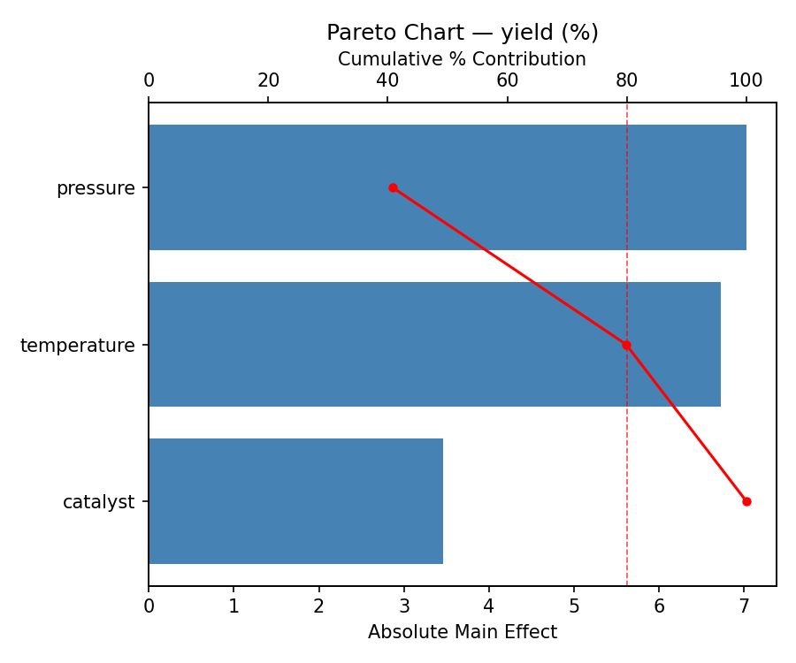
Main Effects Plot
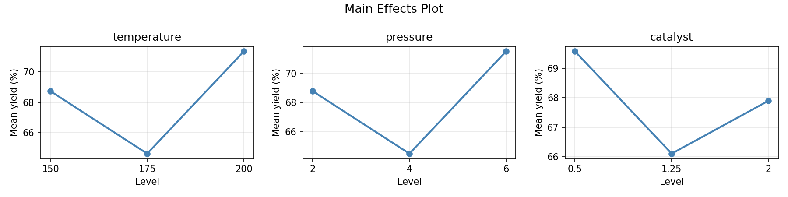
Response: purity
Temperature (40.7%) and catalyst (32.2%) dominate purity, making them the key levers for product quality.
Pareto Chart
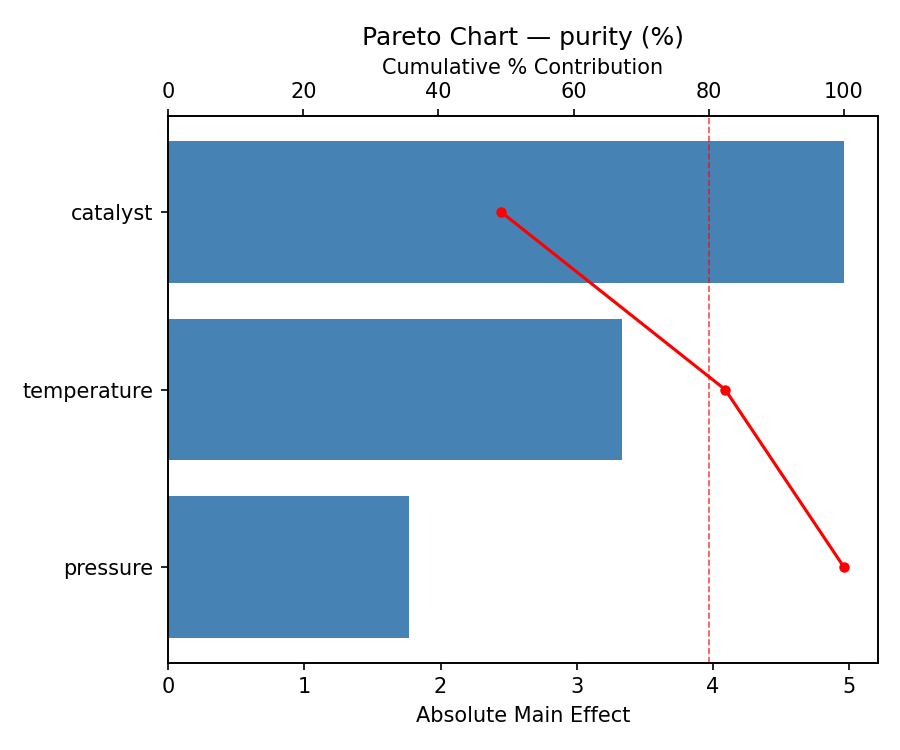
Main Effects Plot
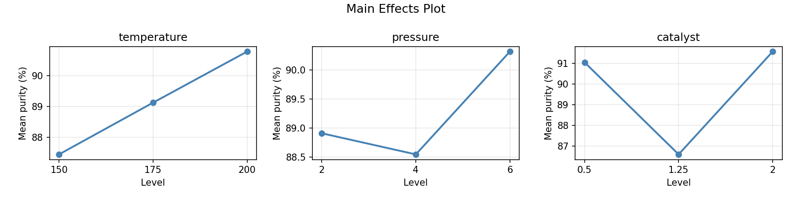
Response: cost
Pressure (41.9%) and catalyst (40.9%) dominate cost, suggesting these factors must be balanced against yield gains.
Pareto Chart
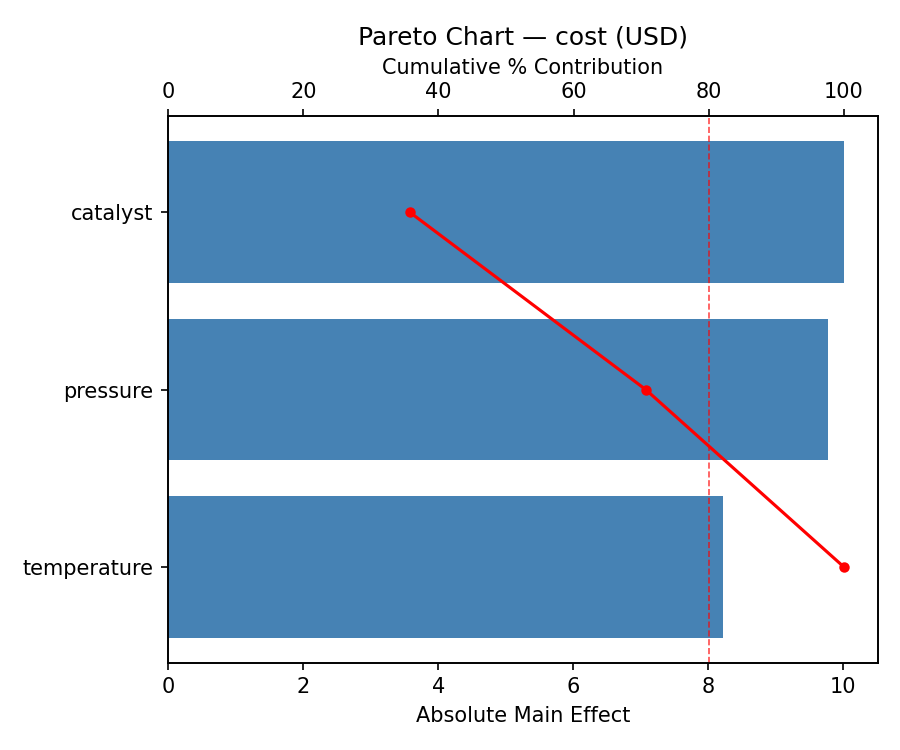
Main Effects Plot
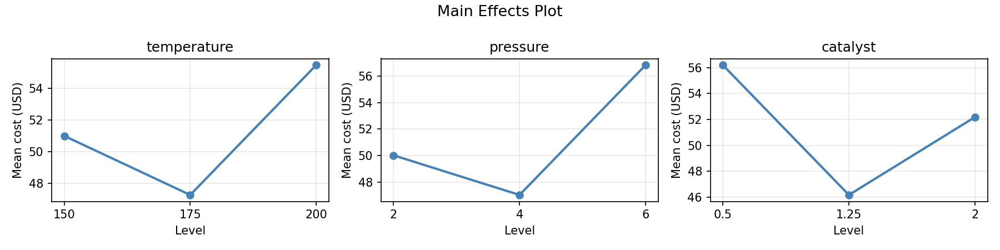
Response Surface Plots
3D surfaces fitted with quadratic RSM. Red dots are observed data points.
How to Read These Surfaces
Each plot shows predicted response (vertical axis) across two factors while other factors are held at center. Red dots are actual experimental observations.
- Flat surface — these two factors have little effect on the response.
- Tilted plane — strong linear effect; moving along one axis consistently changes the response.
- Curved/domed surface — quadratic curvature; there is an optimum somewhere in the middle.
- Saddle shape — significant interaction; the best setting of one factor depends on the other.
- Red dots far from surface — poor model fit in that region; be cautious about predictions there.
yield (%) — R² = 0.693, Adj R² = 0.140
Moderate fit — surface shows general trends but some noise remains.
Curvature detected in catalyst, pressure — look for a peak or valley in the surface.
Strongest linear driver: temperature (decreases yield).
Notable interaction: temperature × pressure — the effect of one depends on the level of the other. Look for a twisted surface.
purity (%) — R² = 0.843, Adj R² = 0.561
Moderate fit — surface shows general trends but some noise remains.
Curvature detected in pressure, temperature — look for a peak or valley in the surface.
Strongest linear driver: pressure (increases purity).
Notable interaction: temperature × catalyst — the effect of one depends on the level of the other. Look for a twisted surface.
cost (USD) — R² = 0.642, Adj R² = -0.002
Moderate fit — surface shows general trends but some noise remains.
Curvature detected in catalyst, temperature — look for a peak or valley in the surface.
Strongest linear driver: temperature (decreases cost).
Notable interaction: pressure × catalyst — the effect of one depends on the level of the other. Look for a twisted surface.
cost: pressure vs catalyst
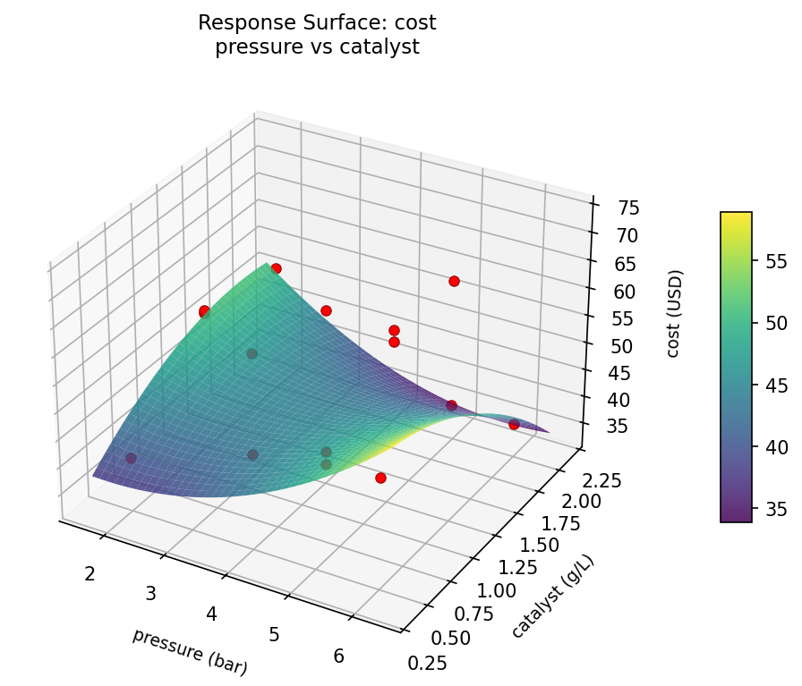
cost: temperature vs catalyst
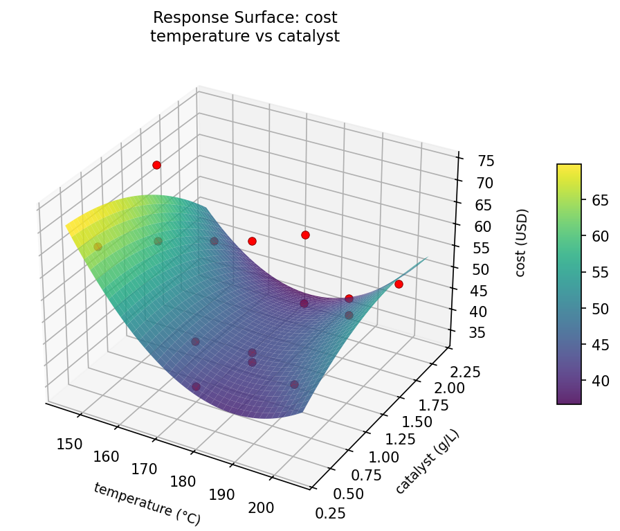
cost: temperature vs pressure
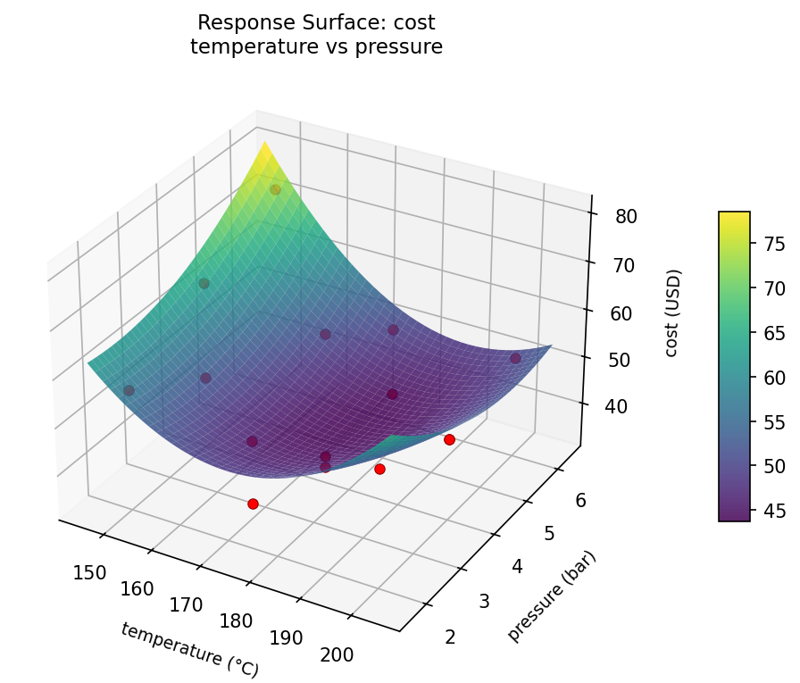
purity: pressure vs catalyst
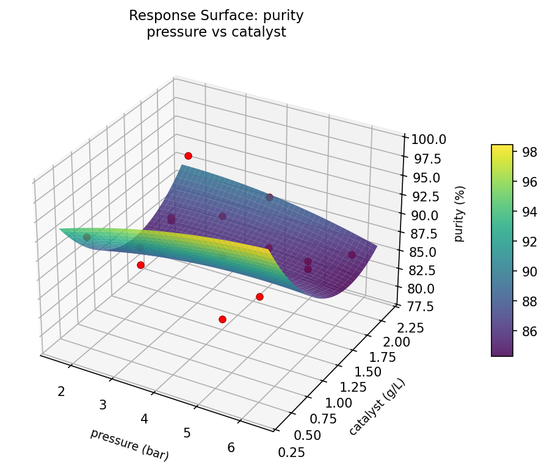
purity: temperature vs catalyst
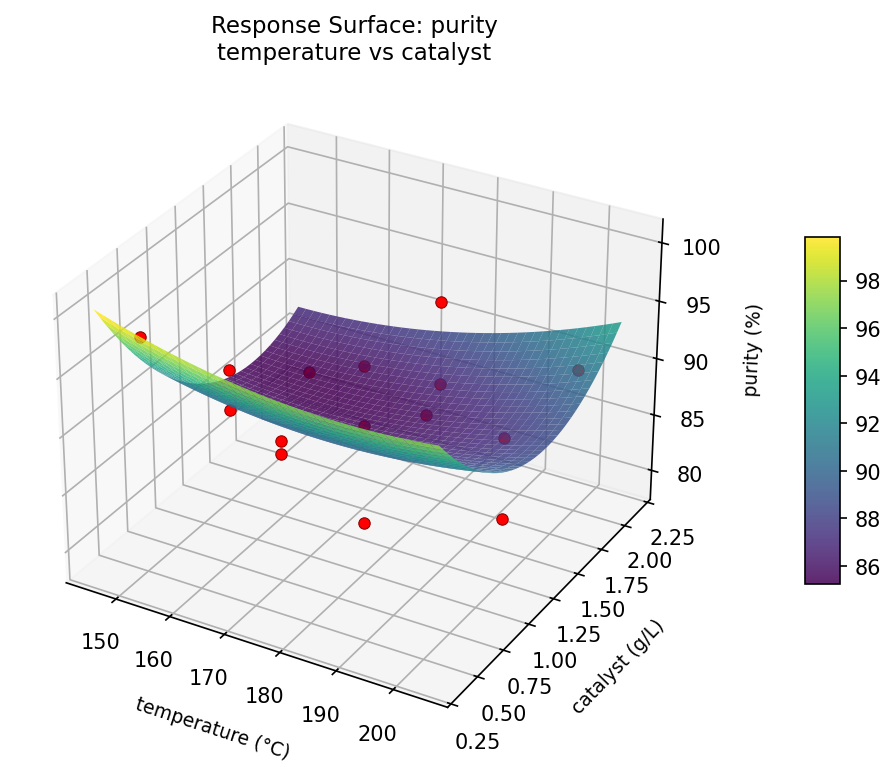
purity: temperature vs pressure
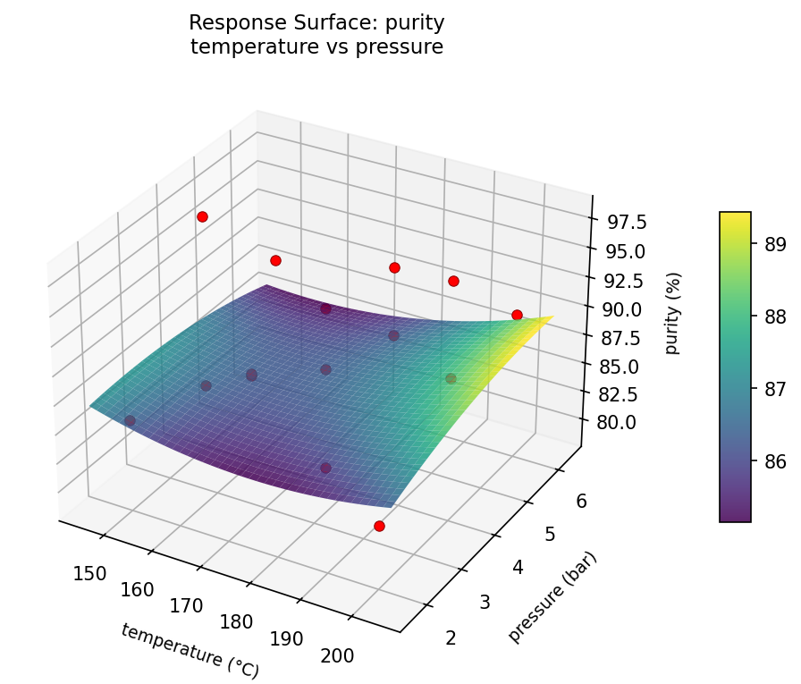
yield: pressure vs catalyst
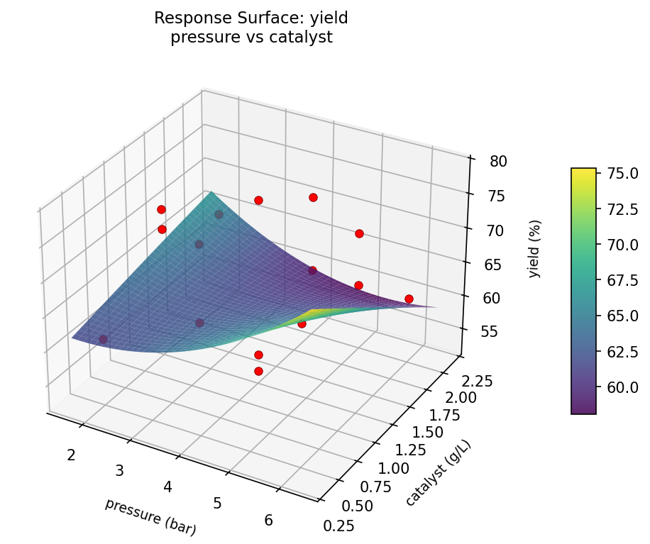
yield: temperature vs catalyst
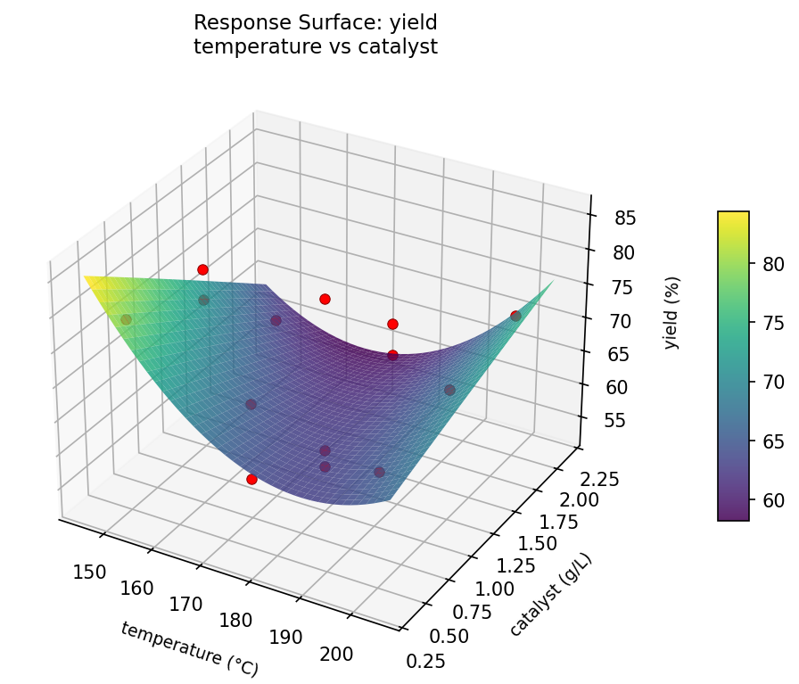
yield: temperature vs pressure

Full Analysis Output
Optimization Recommendations
Multi-Objective Optimization
When responses compete, Derringer–Suich desirability finds the best compromise. Each response is scaled to a 0–1 desirability, then combined via a weighted geometric mean.
Per-Response Desirability
| Response | Weight | Desirability | Predicted | Dir |
|---|---|---|---|---|
yield |
1.5 |
0.5648
|
67.55 0.5648 67.55 % | ↑ |
purity |
2.0 |
0.9545
|
97.99 0.9545 97.99 % | ↑ |
cost |
1.0 |
0.6383
|
47.76 0.6383 47.76 USD | ↓ |
Recommended Settings
| Factor | Value |
|---|---|
temperature | 150 °C |
pressure | 4 bar |
catalyst | 0.5 g/L |
Source: from observed run #9
Trade-off Summary
Sacrifice = how much worse than single-objective best.
| Response | Predicted | Best Observed | Sacrifice |
|---|---|---|---|
purity | 97.99 | 97.99 | +0.00 |
cost | 47.76 | 34.05 | +13.71 |
Top 3 Runs by Desirability
| Run | D | Factor Settings |
|---|---|---|
| #3 | 0.6895 | temperature=175, pressure=4, catalyst=1.25 |
| #6 | 0.6436 | temperature=150, pressure=4, catalyst=2 |
Model Quality
| Response | R² | Type |
|---|---|---|
purity | 0.1730 | linear |
cost | 0.0211 | linear |